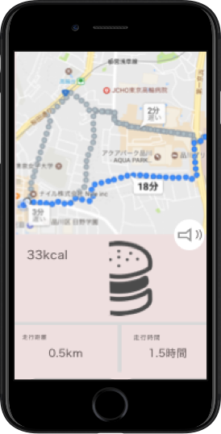
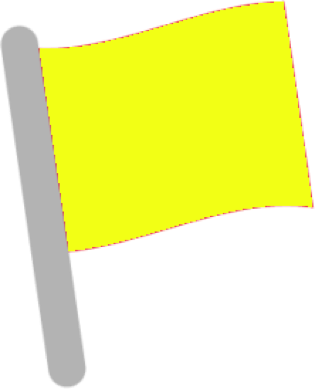
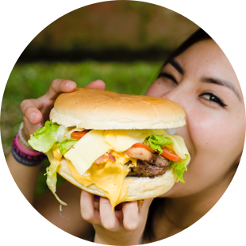
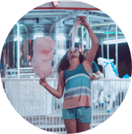
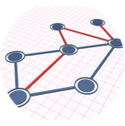
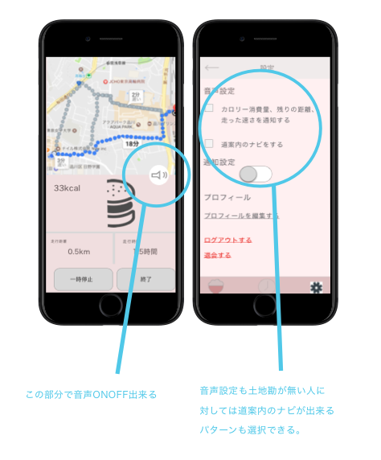

eating run
〜食べる！走る！モチベーション爆上げアプリ〜


食べることが好きだけど運動が苦手で太る一方..という方々の悩みを克服できるアプリです。
走る時のカロリー消費の表示が食べ物で例えられることで、走り終わってから食べることに対しての罪悪感が減ることを目的としています。
スケジュール
完成！
ターゲット

食べることが好きな２０代〜３０代の女性。比較的一人の時間が多い未婚の方。
ターゲットの悩み
解決アイデア
何かを続けるには
「モチベの維持」
が重要
走ることのモチベーションは
走った距離、カロリー消費量
どうしたら食べることが好きな人が走るモチベに繋げられるか？

食べ物のカロリーが実際の消費カロリーに例えられたら、
走り終わって罪悪感なく食べ物を食べられそう。

走ることが苦手なので最短距離で地図上からルートを
提示してくれたら気持ち的にも楽に走れる
良かった点
実際に日常的に走っている人からフィードバックをもらえたこと。直接話しを聞かなければ気が付かない
「走る時にはスマホを見ない」
ことも気が付かなかった。そこから走った距離や、消費したカロリー等を「音声」で知らせてくれる機能等も追加し、 直接ユーザーから話を聞くことは重要なことだと改めて気がついた。

苦労した点.
スケジュール通りに進めることが難しかった。最初、ページの要素が絞れていない状態でワイヤーの下書きを始めてしまったので時間がかかってしまった。今後お仕事する時にも計画的に進めていかなければならないので計画を立てて、
期日までに終わるか逆算してきちんと考えられるように克服していきたい。